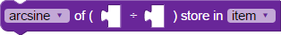

BlocklyProp reference for NUMBERS blocks


 Compatible with all Propeller board types (except Scribbler Robot).
Compatible with all Propeller board types (except Scribbler Robot).
The NUMBER operator blocks can accept number value blocks, and any other operation blocks or sensor blocks that provide a numerical value.
math operation
The math operation block performs a mathematical operation on the inserted value blocks. Non-integer (fraction or decimal) results will be truncated to an integer. Choose an operation from the dropdown menu:
- + addition
- - subtraction
- × multiplication
- ÷ division
- % modulus (remainder after division)
- ^ (raise to the power of)

The math operation block has two terms by default. Click the gear and drag over additional terms as needed. THE LIMIT IS 26 TERMS.
Order of operations
- Innermost, when operation blocks are nested
- Raising to a power - use nested operations to raise a power to a power or you may get unexpected results. Switch to the code view to verify that the operations performed on the terms are what you expect.
- Multiplication & division
- Addition & subtraction
To change the order of operations, nest operation blocks inside each other, and/or use the Parentheses block (below).
limit

The limit block allows you to compare the inserted values, and use the highest or lowest value as chosen in the dropdown menu.
constrain
The constrain block prevents a value from being too large or too small before using it. Insert a value or variable item, and then enter the maximum and minimum values for the range you want that value to stay within before it is used.
de/increment
The de/increment block increases (increment) or decreases (decrement) the variable attached to it by 1.
random
The random block provides a random number between the first inserted low value and the second inserted high value. The first number must be smaller than the second number. If they are not in that order, the resulting random value may be unexpected, such as a number outside the range specified.
bitwise
The bitwise block performs a bitwise operation (& AND, | OR, ^ XOR, >> right shift, << left shift) on the two values inserted.
boolean comparison
The boolean comparison block performs a boolean comparison between the two inserted values and provides a 1/true or 0/false depending on the option selected (and, or, and not, or not).
not
The not block performs the selected operation on the value attached and provides the result. The options are:
- not: provide the boolean (1/true or 0/false) opposite of the value attached to it. (Any number other than 0 provides a 0/false.)
- negate: provide the signed value complement; for example, negate 9 provides -9).
- abs: provide the absolute value; for example, absolute 9 and absolute -9 both provide 9.)
parentheses
The parentheses block surrounds the enclosed block(s) with parentheses. Use parentheses to change the order of operations in a series of blocks.
compare values
The compare values block compares two inserted values and provides a boolean value, 1 if the equation is true, and 0 if it is false. Choose the type of comparison from the dropdown menu:
- = equal to
- ≠ not equal to
- > greater than
- < less than
- ≥ greater than or equal to
- ≤ less than or equal to
map value
The map value block scales and offsets the inserted value from the first defined range to the second defined range. This block does not constrain the value that you've entered. For example, given the ranges shown the the block above, if the value you enter is -5, it will output -10, because the block is asking the new range to be twice the original range.
advanced math
The advanced math block performs a trigonometric, exponential, or logrithmic function on the inserted values, and stores the result in a variable. Angles are in integer degrees, not radians. Options are:
- the cosine
- the sine
- the tangent
- the square root
- e raised to the power
- the logarithm (base 10)
- the natural logarithm)
Since Blockly is working only with integer math, the block requires you to begin with a multiplier (the first inserted value). Although you could use 1 here, larger numbers make this block more precise.
inverse trig

The inverse trig block performs an inverse trigonometric function. The angles that this block calculates and stores are in integer degrees, not radians. Options are:
- arcsine
- arccosine
- arctangent
Because inverse trigonometry operations usually are done on ratios (one number divided by another, the block requires you to input both the numerator and denominator of the ratio. If you need the inverse trig operation of a single number, use 1 as the denominator (the second number).